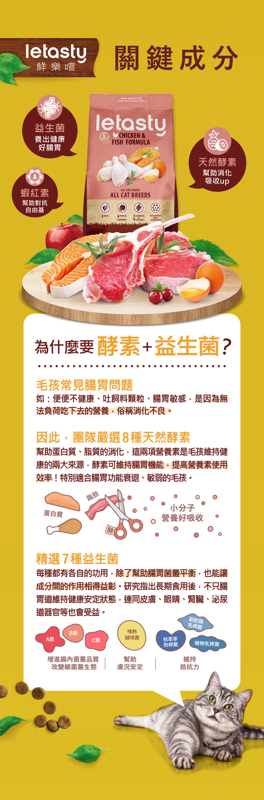
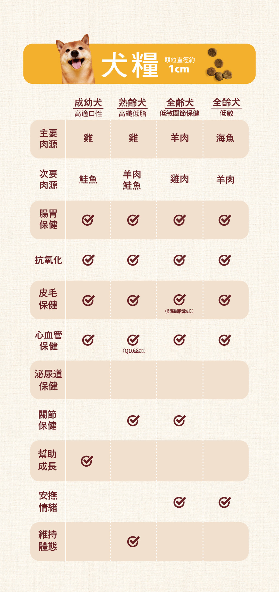
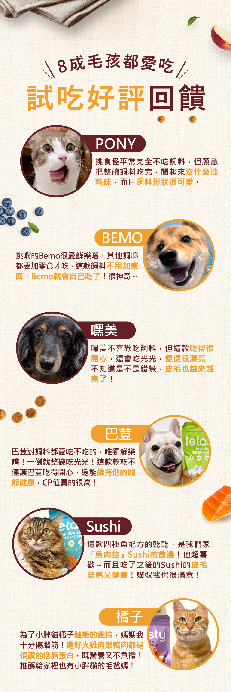
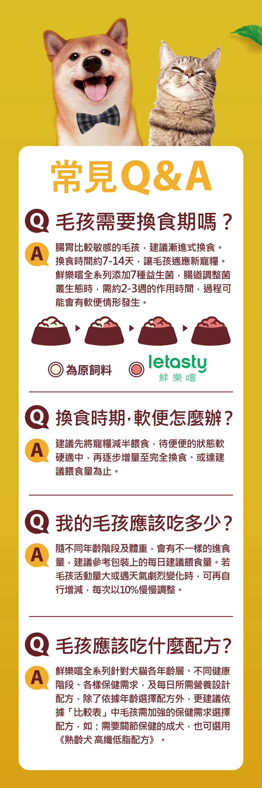

熟齡犬雞&羊&鮭魚高纖低脂配方
產品介紹
鮮樂嚐「熟齡犬雞&羊&鮭魚高纖低脂配方」專為6個月以上的貓咪設計，精選優質雞肉與鮭魚作為主要蛋白質來源，口感鮮美，營養豐富，同時添加特殊化毛成分，有效預防毛球形成問題。本產品特別添加7種精選益生菌和8種天然酵素，幫助貓咪維持健康的腸道環境，改善消化吸收，增強免疫力。配方中的深海魚油富含Omega-3脂肪酸，有助於保持貓咪皮膚健康和毛髮亮麗。無穀配方，減少過敏風險，適合各年齡階段的貓咪食用。



